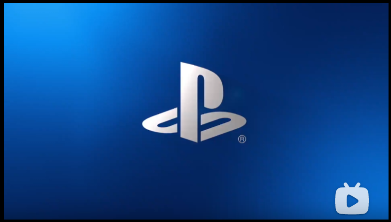

Ideal Job
My ideal job is being a VR Product Manager.
Although this promotional film is not for this position, I want to join the VR product manager of this company.
My ideal job is here: https://www.bilibili.com/video/BV1Ts411C7Gf?from=search&seid=16900983067289818341 .
This position is mainly responsible for the virtual reality business and technical route. I need to manage and develop the virtual reality project, customize the project plan, and track and supervise. In fact, my latest point is the product manager of virtual reality. Therefore, it is likely to design and plan according to my ideas. Of course, my ideas will go through market research and analysis and the report summary of various technical schemes.
This position requires me to have a product manager for small project development for three to five years, and the degree is above bachelor's degree, and the relevant technology is also very rigorous. I also need to master the mainstream virtual reality engines such as unity3d and unreal. This kind of work tests my business development ability, market analysis ability and scheme writing ability.
What I have now is only agile development I learned before. I also use the Java language and python language. Therefore, I'm far from qualified to be a VR product manager.
I need to learn more about project management and agile development. I also have to go to the company to practice product manager. And learn more about the mainstream engine of virtual reality. I know there are many such courses in our school's elective courses. Therefore, I have some opportunities for me to choose some elective courses I am interested in. I believe such elective courses will help me achieve my ideal position.